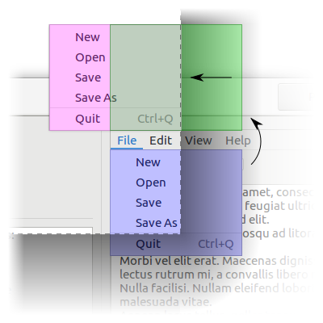

Signal
GtkMenu::popped-up
since: 3.22
Declaration
void
popped_up (
GtkMenu* self,
gpointer flipped_rect,
gpointer final_rect,
gboolean flipped_x,
gboolean flipped_y,
gpointer user_data
)
Description [src]
Emitted when the position of menu is finalized after being popped up
using gtk_menu_popup_at_rect (), gtk_menu_popup_at_widget (), or
gtk_menu_popup_at_pointer ().
menu might be flipped over the anchor rectangle in order to keep it
on-screen, in which case flipped_x and flipped_y will be set to TRUE
accordingly.
flipped_rect is the ideal position of menu after any possible flipping,
but before any possible sliding. final_rect is flipped_rect, but possibly
translated in the case that flipping is still ineffective in keeping menu
on-screen.

The blue menu is menu‘s ideal position, the green menu is flipped_rect,
and the red menu is final_rect.
See gtk_menu_popup_at_rect (), gtk_menu_popup_at_widget (),
gtk_menu_popup_at_pointer (), GtkMenu:anchor-hints,
GtkMenu:rect-anchor-dx, GtkMenu:rect-anchor-dy, and
GtkMenu:menu-type-hint.
| Default handler: The default handler is called before the handlers added via |
| Available since: 3.22 |
Parameters
flipped_rect-
Type:
gpointerThe position of
menuafter any possible flipping orNULLif the backend can’t obtain it.The argument can be NULL.The data is owned by the caller of the function. final_rect-
Type:
gpointerThe final position of
menuorNULLif the backend can’t obtain it.The argument can be NULL.The data is owned by the caller of the function. flipped_x-
Type:
gbooleanTRUEif the anchors were flipped horizontally. flipped_y-
Type:
gbooleanTRUEif the anchors were flipped vertically.